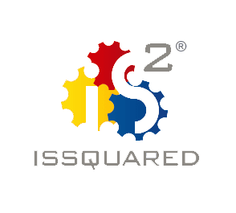
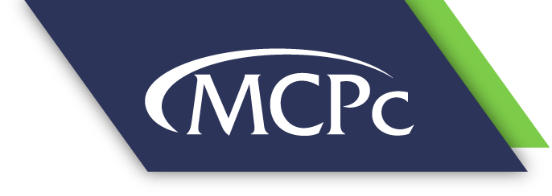

Jacob Scheetz
Scroll down for my blog and to learn more about me! ☟
🚀 Welcome to my website!
Blog
view blog postsI like trying to break things on the internet 💥
📜 Manifesto
I am a recent college graduate from the University of Dayton, where I majored in Computer Information Systems. I also received a certificate in Cyber Defense through the NSA/DHS's School of Excellency program.
I mainly use this site as a collection of security resources that I've accumulated over my time in the field. Those resources include things like blog posts, Yara rules, useful tools, HackTheBox walkthroughs, TryHackMe walkthroughs, certification reviews and so much more.
Feel free to hang around and enjoy some content here! 🙂
👩🏽🚀 Projects
Cyber Threat Intelligence Tool - GE Aviaton
As apart of my senior year capstone, I developed a cyber threat intelligence CLI tool in python called Cyber Turtle.
This tool is comprised of three main components, a JSON wordlist of relevant terms to the user, a content analyzer to read in
reports, and a similarity calculator. The tool uses the TFIF algorithm to calculate a normalized score for each document that is read in
based on a constantly changed base line and then report it to the user to determine if it is worth reading for TPI. The tool supports multiple user modes
and is highly flexible due to the CLI. Check out the open source version here:
View Open-Source Version Here
🏆 Accomplishments
National Cyber League 2020
In the spring 2020 individual game, I was able to place 130th out of 5755 participants nationwide. This score based on accuracy and completion of challenges put me just inside the top 10 percent of competitors for the year. For those unfamiliar, the NCL is a CTF event where competitors work through challenges in the categories of: OSINT, cryptography, password cracking, log analysis, network traffic analysis, forensics, web app exploitation and reverse engineering.
TryHackMe
Sticking to my commitiment to a continuation of education, I constantly hone my cyber skills by exploring new topics and brushing up on olds one through TryHackMe's platform. On this site, I have achieved top 2 percent of users out of 500,000+ registered users.
📚 Certifications
CompTIA Security+
Valid Aug 2020 - Aug 2023
Verify HereStudying for eJPT
Estimated exam date → July 2021
On the horizon ::: OSCP
Estimated exam date → Early December 2021
Oppotunities multiply as they are seized
- Sun Tzu
💻 Work History
ISSQUARED Inc.
Digital Forensics and Incident Reponse Analyst
Day to day responsibilities included: conducting investigations on verified alerts from SIEM and EDR to determine causality in incidents Other responsibilities included: help build and deploy cloud applications for clients, Run vulnerability assessments in Qualys, assist in building RIN servers and utilizing automated code vulnerability scanners to aid in the DevSecOps process
MCPc Inc.
Cyber Intern
Generated weekly vulnerability tracking reports for several customer accounts as well as internal production. These reports markedly helped the businesses identify and manage the vulnerabilities that were currently a risk to the business. Additionally, these provided insight and progress metrics to the business to see the risks they have mitigated over time as well as emerging threats. Also, I worked with the Cyber Security Incident Response Team (CSIRT) to respond to actively identified data breaches. Work included restoring data from breach site, re-imaging infected computers, retrieving important forensic data from breached machines, etc.
University of Dayton Research Institute | NASIC
Research Assistant
Worked on an ITAR restricted project on which I was the team resource for all things Ghidra (SRE), wireless network exploitation, and network traffic analysis. By becoming the team resource in these categories I became more skilled in things like: python scripting, wireshark, malware analysis, and offensive security techniques.
Thanks for visiting!